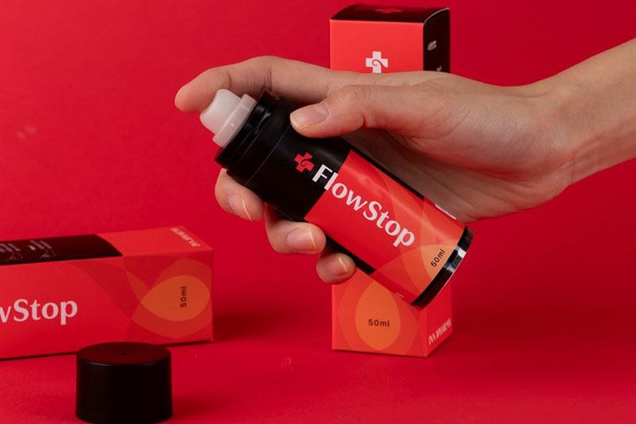
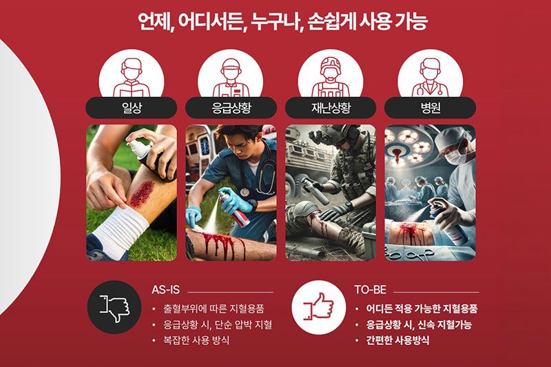
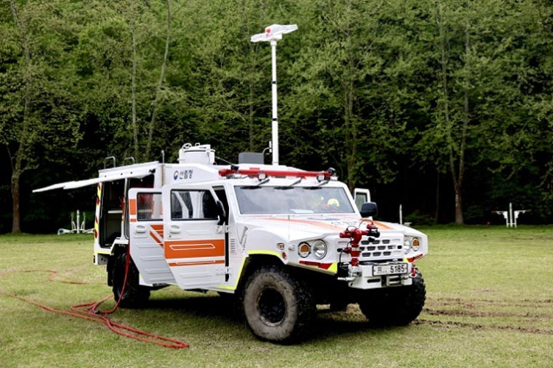
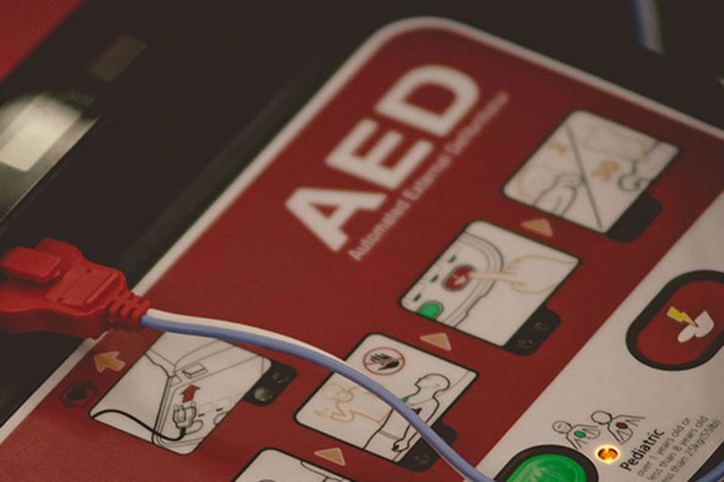
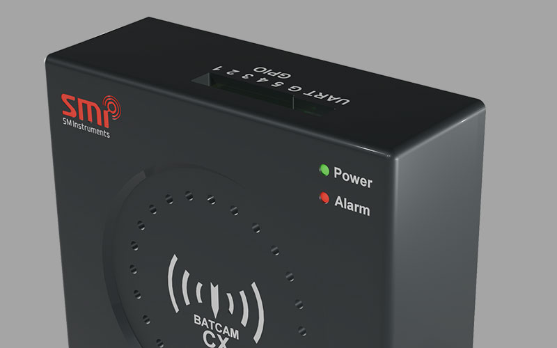
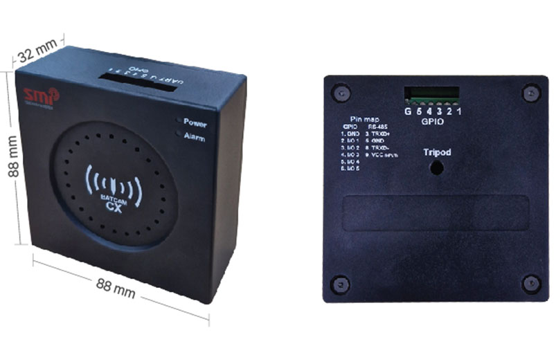
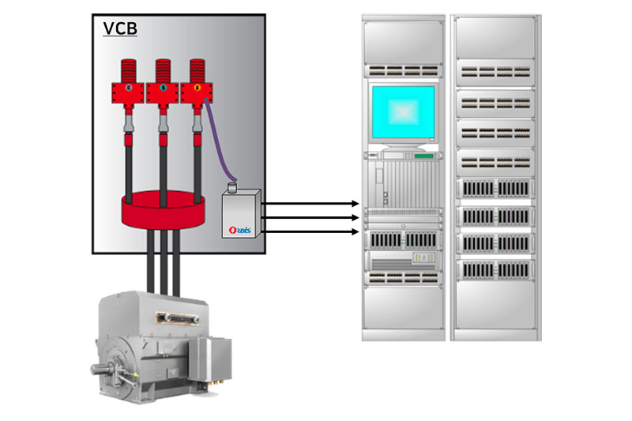
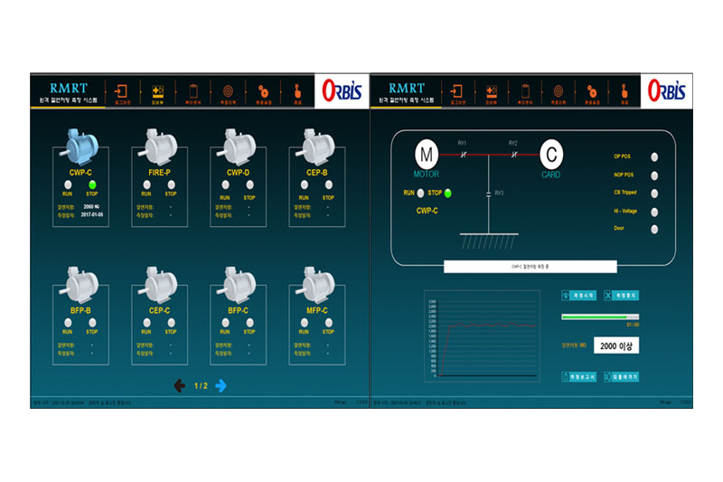

해마다 재난의 양상은 복잡해지고, 현장의 요구는 더 빠르고 더 정밀한 기술을 요구한다. 재난안전 인증제품은 재난의 예방·대비·대응 및 복구 활동까지 전 주기를 아우르며 국민의 생활과 밀접한 제품으로, 다양한 현장에서 활용 가능한 재난안전 인증제품을 소개한다.
재난 현장 대응 및 응급처치
멸균 스프레이형 국소 지혈용품
주식회사 이노파마_플로스탑
산업재해, 재난 응급 상황, 일상적인 외상까지 폭넓은 출혈 상황에서 간편하게 사용할 수 있는 멸균 스프레이형 국소 지혈용품이다. 출혈 부위에 직접 분사했을 때 혈액과 접촉해 2분 이내의 빠른 지혈을 목표로 한다. 특허 기술*을 기반으로 생체적합성 소재를 사용, 과민반응·알레르기·교차감염 위험을 최소화했다. 신체 전 범위에 사용할 수 있고 소형·경량 설계로 휴대 및 보관이 간편해 AED 인접 구급함, 산업안전보건법상 구급함, 학교 보건실, 체육시설, 예비군·민방위 구호 세트 등 공공·산업·국방 영역의 표준 구급물품으로 활용이 기대된다.
[모델명 A1-0050-H1]
*특허 기술: 카올린과 셀룰로오스를 혼합한
분사형 지혈제 제조방법 및 그에 따라 제조된 분사형 지혈제(102743315)


분사 한 번으로 2분 이내 지혈을 목표하는 스프레이형 응급 지혈제
산악·험지 운용에 최적화된 복합 기능 산불 대응 차량
(주)에프원텍_다목적 산불진화차
소방 현장 수요를 바탕으로 설계된 산불 전용 진화 차량이다. 소화용수 저장이 가능한 FRP(섬유 강화 플라스틱) 소재 소화수조와 소방펌프, 급수펌프를 탑재해 접근이 어려운 산악 및 험지 현장에서도 안정적인 소화 활동을 수행할 수 있다. 범퍼에 장착된 자동 방수총과 차체 보호 분무장치를 통해 차량 이동 중에도 방수 기능을 병행할 수 있어 초기 진화에 투입 가능하다. 소화, 급수, 조명 기능을 한 차량에 통합함으로써 복잡한 재난에서 현장 대응 활동을 효율적으로 지원한다.
[모델명 FPT-DSA20K]


소화·급수·조명 기능 통합, 험지 산불 현장의 초기 대응력을 획기적으로 강화
화재·폭발 예방 및 전기 안전
24채널 빔포밍 기반 실시간 초음파 이상 감지
(주)에스엠인스트루먼트_고정형 소형 초음파 음향 탐지 장치
반도체·플랜트·정유·화학공장 등 고압가스를 다루는 산업현장과 고압 배전반 내 전기 설비에서 발생하는 초음파 신호를 실시간으로 포착해 이상 상태를 모니터링하는 안전 진단
장치다. 24채널 마이크로폰 어레이가 고압가스 누출이나 부분방전 시 발생하는 고주파 신호를 수집하고, 고속 연산과 빔포밍 알고리즘*이 신호의 위치와 특성을 정밀
분석한다.
분석 결과는 운용자에게 실시간으로 전달되어 즉각적인 현장 대응이 가능하다. 배경 소음과 이상 신호를 정밀하게 분별함으로써 오경보를 최소화하고, 자동 알림 및
기록 기능으로 설비 상태 이력 관리도 지원한다. KC·CE·FCC·RoHS 등 국내외 주요 인증을 모두 획득한 제품.
[모델명 BATCAM CX]
*빔포밍(Beamforming) 알고리즘:
안테나나 마이크에서 신호를 보낼 때 원하는 특정 방향으로만 신호를 모아주는 기술.


초음파 신호로 가스 누출·부분방전을 조기 포착, 대형 산업 사고를 사전에 차단
원격 자동 측정으로 고전압 접근 위험 원천 제거
(주)오르비스_고압전동기 원격 절연저항 측정장치
발전소·산업플랜트 등 고압전동기가 밀집된 시설에서 설비 신뢰성 확보를 위해 필수적인 절연저항 측정을 원격·자동화한 장치다. 기존의 수동 측정 방식은 작업자가 고전압부에 직접 접근해야 해 감전 등 인적 사고의 위험이 있었다. 이 장치는 원격으로 절연저항을 측정함으로써 그 위험을 원천적으로 제거했다. 고압차단기 인출 없이 적은 인원으로 빠른 시간 안에 측정을 완료할 수 있어 설비 운영 효율도 크게 향상된다. 측정 이력은 DB화되어 전동기의 절연 상태 변화 추이를 분석하고 고장을 사전에 예측하는 진단이 가능하다.
[모델명 RMRT 2.0]


고전압 직접 접촉 없이 원격으로 절연저항을 자동 측정
다른 재난안전 인증제품도 있어요!
인증 유효기간 2025.12.23. ~ 2028.12.22.| 기업명 | 인증제품 | 모델명 |
|---|---|---|
| 주식회사 세이프윈 | 개폐형 방범창 | CA-S |
| 주식회사 크랜베리 | 지능형 융복합 음원분석 장치 | CB-IC-01 |
| 엘글로벌 주식회사 | 그리드 기술을 이용한 지능형 도로 분석 기술 기반의 영상감시장치 | LBSP-M001, LBS-M001, LBSP-1001, LBS-1001 |
| (주)세렉스 | 안전 사고 예방을 위한 투신 및 낙석 조기 경보 시스템 | 라인디텍션시스템 |
| (주)아이앤씨테크놀로지 | 전기화재 방지를 위해 기존 누전 차단기와 1:1 호환되는 프로세서 기반의 아크차단기 겸용 누전차단기 | IAP-7XI32 30A, IAP-7XI32A 20A |
| (주)대한전공 | 멀티센서 모듈기반 열화감지장치를 내장한 수배전반 | DH-HV-VCB25.0-0630 |